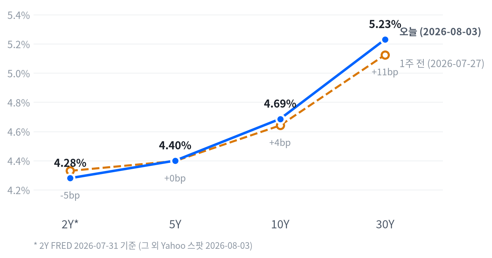

이날 장을 관통한 동인은 단연 지정학이었다. 트럼프 대통령이 이란에 대한 대규모 공습 계획을 철회하고 오만 중재로 진행 중인 호르무즈 해협 관리 협상을 재개하겠다고 밝히면서 리스크 프리미엄이 급격히 빠졌고, 이는 유가 급락(WTI -5.54%, Brent -7.26%)을 통해 인플레이션 완화 기대로, 다시 국채 금리 하락(10년물 -5.9bp)과 주식 전반의 리레이팅으로 이어지는 단일한 인과 사슬을 형성했다.
여기에 8월 첫 거래일을 맞아 AI 인프라 밸류체인(코히런트 +9.60%, 루멘텀 +9.24%, 버티브 +8.89%)에 대한 투자자 관심이 재점화되며 지수 상승폭을 한층 키웠다.
크로스에셋 정합성은 대체로 견고하다. 주식(리스크온)·채권(금리 하락)·원자재(유가 급락)·엔화(안전자산 성격의 급격한 강세, 다만 이는 공동 개입이라는 별도 재료)가 모두 "지정학 리스크 완화"라는 하나의 서사로 설명되며, 방어 섹터가 소외되고 경기민감 섹터가 주도한 점도 이 서사와 부합한다. 다만 금(+1.44%)이 리스크온 국면에서도 함께 오른 점은 다소 이례적인데, 금리 하락에 따른 기회비용 감소가 지정학 리스크 완화보다 더 크게 작용한 결과로 볼 수 있다.
다음 촉매는 이란-미국 협상의 실제 진전 여부와 이번 주 예정된 고용지표다. 8/5(수) 예정된 ISM 서비스업·ADP 고용보고서를 거쳐 8/7(금) 7월 비농업고용(컨센서스 매체별로 +110K~+130K 편차)이 발표되고, 8/12(수) 7월 CPI가 유가발 인플레이션 완화가 실제 수치로 확인되는지를 가늠할 핵심 변곡점이 될 전망이다. 협상이 결렬되거나 고용지표가 예상외로 뜨겁게 나올 경우 오늘의 랠리는 빠르게 되돌려질 수 있어 포지션 확대는 단계적으로 접근할 필요가 있다.
| 지수 | 종가 | 등락 | 등락률 |
|---|---|---|---|
| S&P 500 Growth | 138.24 | +2.99 | +2.21% |
| Nasdaq | 25,913.90 | +540.05 | +2.13% |
| Russell 2000 | 2,981.91 | +50.57 | +1.73% |
| S&P 500 | 7,600.50 | +110.78 | +1.48% |
| Dow | 53,178.41 | +693.38 | +1.32% |
| S&P 500 Value | 233.09 | +1.38 | +0.60% |
| 섹터 | 종가 | 등락 | 등락률 |
|---|---|---|---|
| Comm. Services | 111.34 | +3.10 | +2.86% |
| Industrials | 183.16 | +3.32 | +1.85% |
| Consumer Disc. | 118.21 | +2.12 | +1.83% |
| Technology | 178.04 | +2.69 | +1.53% |
| Materials | 51.01 | +0.58 | +1.15% |
| Financials | 57.38 | +0.44 | +0.77% |
| Real Estate | 45.18 | +0.11 | +0.24% |
| Utilities | 44.36 | +0.01 | +0.02% |
| Health Care | 162.24 | -0.31 | -0.19% |
| Consumer Staples | 84.86 | -0.19 | -0.22% |
| Energy | 58.79 | -0.76 | -1.28% |
나스닥은 09:30 개장 직후 장중 저점(개장가 대비 -0.14%)을 찍은 뒤 오전부터 오후까지 꾸준히 상승폭을 늘려 14:00에 장중 고점(개장가 대비 +1.99%)을 기록했고, 이후 상승폭을 일부 유지한 채 종가 기준 +2.13%로 마감했다. S&P500과 러셀2000은 나스닥과 달리 09:30 개장가 자체가 장중 저점이었고 이후 하락 없이 오후 늦게까지(각각 15:00·15:30) 상승폭을 계속 확대하는 전형적인 우상향 궤적을 그렸다.
이런 흐름은 트럼프 대통령이 이란에 대한 대규모 공습 계획을 취소하고 오후부터 협상 재개를 시사했다는 소식이 장중 내내 위험자산 심리를 지지한 결과로 풀이된다. 지수 저점이 모두 개장 직후에 형성되고 이후 반락 없이 상승세가 이어진 점은 장중 새로운 악재가 없었다는 뜻이기도 하다.
개별 종목에서는 엔비디아가 09:30 저점(개장가 대비 -0.21%)에서 14:00 고점(+5.16%)까지 지수보다 훨씬 가파르게 뛰었다가 AI 인프라 랠리에 편승한 매수세가 오후 들어 일부 차익실현에 밀리며 종가는 +2.93%로 상승폭을 반납했다. 지수 저점 시각(09:30)과 나스닥의 고점 시각(14:00)이 겹치는 점에서 엔비디아의 장중 흐름이 이날 나스닥 궤적의 상당 부분을 설명한다고 볼 수 있다.
이날 상승은 개별 기업 실적보다 거시 리스크 프리미엄 완화가 이끈 지수 전반의 리레이팅에 가깝다. Communication Services(+2.86%)·Industrials(+1.85%)·Consumer Discretionary(+1.83%)·Technology(+1.53%) 등 경기·성장 민감 섹터가 고르게 상위권에 포진한 반면 방어주인 Utilities(+0.02%)·Health Care(-0.19%)·Consumer Staples(-0.22%)는 사실상 소외돼, 전형적인 리스크온 로테이션이 확인된다.
Energy(-1.28%)만 유일하게 하락했는데 유가 급락의 직접적인 반영이다. S&P500 Growth(+2.21%)가 Value(+0.60%)를 크게 앞선 점은 금리 하락과 맞물려 성장주 밸류에이션 부담이 완화된 결과로 해석할 수 있다.
다만 이날 상승은 지정학 뉴스 하나에 의존한 심리 반등 성격이 커서, 이란-미국 협상이 실제로 진전되는지 향후 며칠간 확인하는 작업이 병행돼야 한다. 협상이 다시 결렬되면 유가와 인플레이션 우려가 재부상하며 오늘의 랠리가 빠르게 되돌려질 수 있다.
| 만기 | 08-03 종가 | 전일比(bp) | 1주 전 | 주간 변화(bp) |
|---|---|---|---|---|
| 2Y* | 4.28% | +5.0bp | 4.33% | -5.0bp |
| 5Y | 4.400% | -6.0bp | 4.397% | +0.3bp |
| 10Y | 4.686% | -5.9bp | 4.641% | +4.5bp |
| 30Y | 5.231% | -4.4bp | 5.125% | +10.6bp |

2Y*(FRED 2026-07-31)·5Y·10Y·30Y(Yahoo 2026-08-03) 국채금리 커브 — 별표(*) 표기된 2Y는 스팟 지수가 없어 하루 이상 뒤진 기준일의 FRED 값임에 유의. 1주 전 대비 2Y는 5.0bp 내린 반면 5Y·10Y·30Y는 각각 0.3bp·4.5bp·10.6bp 올라 장기 구간일수록 상승폭이 컸다.
당일(08-03) 기준 5s30s 스프레드는 83.1bp로, 5Y(-6.0bp)가 30Y(-4.4bp)보다 더 큰 폭으로 내리며 전일 대비로는 소폭의 불 스티프닝이 나타났다. 유가 급락에 따른 안전자산 매수와 인플레이션 기대 완화가 벨리 구간에 더 강하게 반영된 결과로 보인다.
2s10s 스프레드는 표에 찍힌 기준(2Y FRED 7/31 vs 10Y Yahoo 8/3)으로 +40.6bp, 동일자 FRED 기준으로는 +47.0bp로 두 값의 차이가 6.4bp에 달한다. 이는 하루짜리 커브 변화가 아니라 두 다리의 기준일이 다른 데서 오는 차이이므로 절대 수치를 그대로 하루 변동으로 해석해서는 안 된다.
1주 전 대비로 보면 5Y·10Y·30Y가 나란히 상승(+0.3bp·+4.5bp·+10.6bp)했고 장기물일수록 상승폭이 컸던 반면, 2Y(FRED 기준)는 오히려 5.0bp 하락해 전체적으로는 베어 스티프닝 색채가 짙다. 다만 2Y의 비교 구간(7/24→7/31)이 나머지 만기의 비교 구간(7/27→8/3)과 일치하지 않는 만큼 2Y의 방향성을 장기물과 나란히 놓고 단정하기보다는 참고치로만 활용하는 편이 안전하다.
듀레이션 전략 측면에서는 오늘 하루의 금리 하락이 지정학 리스크 완화라는 일회성 재료에 기인한 만큼 장기물 비중을 서둘러 늘리기보다 벨리 구간 위주로 대응하는 편이 합리적이다. 주간 기준으로 장기물 금리가 여전히 오름세라는 점에서 30년물 매수는 8/12 CPI로 인플레이션 재가속 우려가 추가로 완화되는지 확인한 뒤 판단하는 것이 낫다.
| 통화쌍 | 종가 | 등락 | 등락률 |
|---|---|---|---|
| USD/JPY | 157.582 | -2.601 | -1.62% |
| USD/KRW | 1,428.77 | +8.17 | +0.58% |
| DXY | 99.99 | +0.19 | +0.19% |
| EUR/USD | 1.1511 | -0.0012 | -0.10% |
이날 FX 시장에서 가장 큰 폭으로 움직인 통화는 엔화였다. USD/JPY는 01:00에 장중 고점(157.886, 개장가 대비 +0.37%)을 찍은 직후 불과 30분 만인 01:30에 장중 저점(155.215, -1.33%)까지 급격히 되돌리는 변동성을 보였는데, 이는 미·일 양국이 2011년 이후 처음으로 엔화 방어를 위한 공동 개입을 단행했다는 소식이 이 시간대에 확인된 데 따른 것으로 보인다.
이후 엔화는 강세 기조를 유지하며 종가 157.582(전일比 -1.62%)로 마감해 최근 40년래 최저 수준까지 밀렸던 엔 약세 흐름에 제동이 걸렸다.
DXY(+0.19%)는 소폭 상승했지만 방향성이 뚜렷하지 않았고, EUR/USD(-0.10%)도 유로 자체의 약세라기보다는 달러 인덱스의 미세한 강보합을 반영한 수준에 그쳤다. USD/KRW(+0.58%)는 코스피가 전 거래일(7/31) 사상 최대폭 반등을 기록한 이후 숨 고르기에 들어간 가운데 소폭 원화 약세로 마감했다.
| 품목 | 종가 | 등락 | 등락률 |
|---|---|---|---|
| Brent | $83.58 | -6.54 | -7.26% |
| WTI | $79.98 | -4.69 | -5.54% |
| Gold | $4,107.50 | +58.40 | +1.44% |
| Natural Gas | $2.770 | +0.023 | +0.84% |
이날 최대 변동 품목은 유가였다. WTI는 미국 정규장이 열리기 전인 04:30에 장중 고점(80.66달러, 개장가 대비 +1.14%)을 기록한 뒤 정규장 개장 시각인 09:30에 장중 저점(78.43달러, -1.66%)까지 미끄러졌는데, 이미 개장가(79.75달러) 자체가 전일 종가 대비 큰 폭 갭다운된 수준이었다는 점에서 이란 공습 철회 뉴스가 아시아·유럽 장 시간대부터 유가를 강하게 눌렀음을 보여준다. 이후 낙폭을 일부 되돌리며 종가는 79.98달러(전일比 -5.54%)로 마감했다.
Brent(-7.26%)는 WTI보다 더 크게 하락해 이번 유가 충격이 국제 벤치마크 쪽에 더 강하게 반영됐다. 반면 Gold는 02:00 장중 고점(4,127.30달러, 개장가 대비 +0.17%) 이후 09:30 저점(4,074.00달러, -1.13%)까지 내렸다가 되돌려 종가 4,107.50달러(전일比 +1.44%)로 상승 마감했는데, 지정학 긴장 완화라는 같은 재료가 유가에는 하방으로, 금에는 국채 금리 하락에 따른 상방 압력으로 서로 다른 방향에 작용한 셈이다.
Natural Gas(+0.84%)는 원유와 달리 소폭 상승에 그쳐 이번 재료의 영향권 밖에 있었음을 시사한다. 유가와 금이 반대로 움직인 조합은 이날 랠리가 단순한 위험선호 회복이 아니라 지정학 리스크 프리미엄이 원유 시장에서 빠르게 빠져나가는 국면이었음을 뒷받침한다.
| 자산군 | 판단 | 근거 |
|---|---|---|
| 주식 | 리스크온 유지, 단계적 확대 | 지정학 리스크 완화에 경기민감 섹터가 고르게 상승 주도, 다만 단일 뉴스發 반등이라 협상 진전 확인이 병행돼야 함 |
| 채권 | 벨리 중심 중립 듀레이션 | 당일 금리는 전 구간 하락했으나 주간 기준으로는 장기물이 여전히 오름세(30Y +10.6bp)라 장기물 확대는 8/12 CPI 확인 후 판단 |
| FX | 엔화 강세 추종 | 미·일 공동 개입 확인 이후 USD/JPY가 뚜렷한 하락 추세로 전환, 40년래 최저 엔 약세 흐름에 정책적 제동이 걸린 국면 |
| 원자재 | 유가 숏 바이어스, 금 보유 유지 | WTI·Brent 모두 급락 추세 진입 가능성, 이란 협상 진전이 이어지면 추가 하락 여지가 있는 반면 금은 금리 하락 수혜로 견조 |
| 메모리 | 지역별 온도차 확인 우선 | 삼성전자·SK하이닉스(7/31 한국 세션 폭등)의 온기가 미국 상장 저장장치주(웨스턴디지털 -3.23%, 시게이트 -2.93%)에는 되돌림으로 반영, 실적 발표 전 포지션 확대는 신중 |
| AI 인프라 | 테마 강도 확인, 선별 확대 | 코히런트·루멘텀·버티브 등 데이터센터 인프라·광통신 밸류체인 전반이 8월 첫 거래일 동반 급등, 개별 수주·실적 확인을 병행한 확대가 합리적 |
이란-미국 협상 재결렬: 오만 중재 협상이 표면적 진전에 그치고 실질적 합의 없이 결렬되면 유가와 인플레이션 우려가 재부상하며 오늘의 리스크온 랠리가 빠르게 반전될 수 있다.
7월 고용지표 서프라이즈: 8/7 비농업고용이 컨센서스 범위(+110K~+130K)를 크게 벗어나거나 8/5 ISM 서비스업·ADP가 예상외로 강하게 나오면 금리 하락에 기댄 오늘의 밸류에이션 회복이 되돌려질 수 있다.
메모리 섹터 추가 조정: CXMT의 상하이 대형 IPO 신청으로 경쟁 심화 우려가 부각된 가운데 이번 주 예정된 시게이트·웨스턴디지털 실적에서 부정적 가이던스가 확인되면 7/31 폭등분의 되돌림이 더 깊어질 수 있다.
AI 인프라 밸류체인 급등 (코히런트 +9.60%·루멘텀 +9.24%·버티브 +8.89%) — 8월 첫 거래일을 맞아 데이터센터 냉각·전력관리, 광통신 부품 등 AI 인프라 밸류체인 전반에 투자자 관심이 재점화됐다. CoreWeave·Nebius 등 AI 클라우드 인프라주도 동반 급등했다는 보도가 있어(CNBC), 테마 전반의 강세로 해석된다.
유가 급락 (WTI -5.54%, Brent -7.26%) — 트럼프 대통령의 이란 공습 계획 철회와 협상 재개 시사가 직접적인 촉매다. 이란 외무부는 미국과의 직접 협상은 아직 없다고 밝혔지만 오만 중재로 호르무즈 해협 관리 관련 협의가 최종 단계에 있다고 전해졌다(Bloomberg, Spokesman-Review).
메모리·저장장치 엇갈림 (웨스턴디지털 -3.23%, 시게이트 -2.93%, 마이크론 +0.79%) — 7/31 삼성전자·SK하이닉스의 사상급 폭등 이후 나타난 차익실현·포지셔닝 조정 성격으로, 실적 발표를 앞둔 저장장치주에서 되돌림이 두드러졌다.
| 종목 | 종가 | 등락 | 등락률 |
|---|---|---|---|
| Micron | $829.50 | +6.47 | +0.79% |
| Western Digital | $527.22 | -17.62 | -3.23% |
| Seagate | $831.06 | -25.07 | -2.93% |
| Nvidia | $206.64 | +5.89 | +2.93% |
| Samsung Elec | ₩262,500 | +55,500 | +26.81% |
| SK hynix | ₩1,718,000 | +396,000 | +29.95% |
7/31(금) 서울 증시에서 SK하이닉스(+29.95%)·삼성전자(+26.81%)가 사상 최대 폭으로 폭등하고 코스피 지수도 사상 최고 하루 상승률을 기록했다. 아마존·마이크로소프트의 강한 실적 발표로 AI 투자 지속에 대한 신뢰가 회복된 데다, 삼성전자는 사상 최대 영업이익(89.5조원), SK하이닉스는 상반기 영업이익률 76%를 기록한 견조한 펀더멘털이 뒷받침됐다(CNBC, Benzinga).
다만 이 급등은 직전 3거래일 급락에 대한 되돌림 성격도 커, 일부 매체(Invezz)는 반등이 오래가지 않을 수 있다는 신중론을 제기했다. 실제로 8/3 미국 세션에서는 웨스턴디지털(-3.23%)·시게이트(-2.93%)가 나란히 하락하며 차익실현·포지셔닝 조정 흐름을 보였는데, 중국 CXMT의 상하이 대형 IPO 신청에 따른 경쟁 심화 우려와 이번 주로 다가온 시게이트·웨스턴디지털 실적 발표를 앞둔 리스크 축소가 배경으로 지목된다.
마이크론(+0.79%)은 상대적으로 견조했고, 엔비디아(+2.93%)는 AI 인프라 랠리에 동반해 상승했다. 투자 관점에서는 한국 메모리 대형주의 실적 모멘텀 자체는 견조하게 확인되는 반면, 미국 상장 저장장치주는 경쟁·실적 이벤트 리스크에 더 민감하게 반응하고 있어 지역별 온도차를 먼저 확인하고 접근하는 편이 합리적이다.
| 종목 | 분야 | 종가 | 등락 | 등락률 |
|---|---|---|---|---|
| Coherent | 광통신 부품 | $288.14 | +25.25 | +9.60% |
| Lumentum | 광통신 부품 | $779.89 | +65.95 | +9.24% |
| Vertiv | 데이터센터 냉각/전력관리 | $263.05 | +21.48 | +8.89% |
| Marvell | 반도체/데이터센터 커넥티비티 | $193.77 | +6.21 | +3.31% |
| GE Vernova | 전력 인프라/터빈 | $1,006.76 | +16.47 | +1.66% |
8월 첫 거래일을 맞아 AI 데이터센터 인프라 밸류체인 전반에 강한 매수세가 유입됐다. 광통신 부품주인 코히런트(+9.60%)·루멘텀(+9.24%)이 나란히 최상위권에 올랐고, 데이터센터 냉각·전력관리 기업 버티브(+8.89%)도 함께 급등했다. CNBC는 이날 CoreWeave·Nebius 등 AI 클라우드 인프라주도 동반 급등했다고 보도해, 이번 강세가 개별 종목이 아닌 테마 전반의 재평가임을 시사한다.
루멘텀·코히런트·버티브는 모두 2026년 3월 S&P500 정기 리밸런싱에서 신규 편입된 종목들로, 편입 자체가 AI 밸류체인 확장을 상징한다는 평가를 받아왔다. GE 버노바(+1.66%)는 하이퍼스케일러의 데이터센터 전력·냉각 투자 확대 수혜주로 꾸준히 부각돼 온 종목으로, 2026년 데이터센터向 수주 비중이 전체의 약 1/4까지 확대될 것으로 전망된다.
투자 관점에서는 이날 급등이 대부분 개별 촉매보다 테마 전반의 자금 유입에 기댄 만큼, 다음 실적·가이던스에서 수주 잔고나 매출 성장률로 재확인되는지가 지속가능성을 가늠하는 핵심이 될 것이다. 마벨(+3.31%)처럼 상대적으로 상승폭이 작았던 종목은 오히려 개별 펀더멘털 확인 후 진입할 여지가 남아 있다고 볼 수 있다.
| 지표 | Actual | Forecast | Previous | 발표일/기준 | 판정 |
|---|---|---|---|---|---|
| Initial Jobless Claims (07-25주) | 197K | — | 188K | 주간(07-25 종료) | — |
| Initial Claims 4주 이동평균 | 202.75K | — | 207.75K | 주간(07-25 종료) | — |
| Continuing Jobless Claims (07-18주) | 1,782K | — | 1,789K | 주간(07-18 종료) | — |
| JOLTS 구인건수 | 7,594K | — | 7,585K | 기준월: 2026-05 | — |
| Nonfarm Payrolls (전월비) | +57K | — | +129K | 기준월: 2026-06 | — |
| 실업률 | 4.2% | — | 4.3% | 기준월: 2026-06 | — |
| 시간당 평균임금 MoM | +0.35% | — | +0.27% | 기준월: 2026-06 | — |
| 지표 | Actual | Forecast | Previous | 발표일/기준 | 판정 |
|---|---|---|---|---|---|
| ISM Manufacturing PMI (7월) | 55.6 | 54.0 | 53.3(6월) | 2026-08-01(토) | 상회▲ |
| S&P Global US Manufacturing PMI 확정치 (7월) | 53.9 | 53.8 | 53.9(6월, 동일) | 2026-08-01(토) | 부합= |
| 실질GDP 성장률 (연율, 2Q26 속보치) | +1.5% | — | +2.1%(1Q26) | 기준분기: 2026 2Q | — |
| 산업생산 MoM | +0.08% | — | +0.14% | 기준월: 2026-06 | — |
| 내구재수주 MoM | +0.32% | — | -4.04% | 기준월: 2026-06 | — |
| 신규주택판매 | 628K | — | 618K | 기준월: 2026-06 | — |
| 기존주택판매 | 4.09M | — | 4.19M | 기준월: 2026-06 | — |
| 지표 | Actual | Forecast | Previous | 발표일/기준 | 판정 |
|---|---|---|---|---|---|
| 소매판매 MoM | +0.22% | — | +1.02% | 기준월: 2026-06 | — |
| 미시간대 소비자심리지수 | 49.5 | — | 44.8(5월) | 기준월: 2026-06 | — |
| 지표 | Actual | Forecast | Previous | 발표일/기준 | 판정 |
|---|---|---|---|---|---|
| CPI YoY | 3.73% | — | 4.27% | 기준월: 2026-06 | — |
| CPI MoM | -0.42% | — | +0.47% | 기준월: 2026-06 | — |
| Core CPI YoY | 2.81% | — | 2.96% | 기준월: 2026-06 | — |
| Core CPI MoM | -0.02% | — | +0.21% | 기준월: 2026-06 | — |
| PPI 최종수요 MoM | -0.28% | — | +0.62% | 기준월: 2026-06 | — |
| PCE 물가지수 YoY | 3.67% | — | 4.08% | 기준월: 2026-06 | — |
| Core PCE YoY | 3.29% | — | 3.42% | 기준월: 2026-06 | — |
| 미시간대 1년 기대인플레 | 4.6% | — | 4.8%(5월) | 기준월: 2026-06 | — |
ISM 제조업 PMI(55.6)가 컨센서스(54.0)를 크게 웃돌며 7개월 연속 확장, 신규수주지수도 56.7로 7개월 만에 확장 전환에 성공했다. 같은 날 발표된 S&P Global 확정치(53.9)는 컨센서스(53.8)에 사실상 부합했지만 신규수주 3개월 연속 둔화, 기업 체감경기 2025년 10월래 최저 등 엇갈린 하위 지표를 함께 내놓아 두 서베이 간 온도차가 뚜렷했다.
CME FedWatch 9월 인상 확률은 7/29 FOMC 직후 59%까지 낮아진 것이 마지막으로 확인된 수치이며(직전 7/29 FOMC 직전 82% 고점 대비 하락), 이날 이란발 유가 급락 이후 갱신치는 아직 확인되지 않았다. 다만 유가 급락이 인플레이션 재가속 우려를 완화하는 방향으로 작용한 만큼, 국채 금리의 전 구간 일간 하락과 주식시장의 강세는 9월 인상 확률이 추가로 낮아졌을 가능성과 정합적이다.
시장은 7월 FOMC에서 워시 의장이 명확한 포워드 가이던스를 주지 않은 채 9-3 표결(반대 3명 모두 인상 소수의견)로 동결한 배경을 여전히 소화 중이며, 다음 변곡점인 8/12 CPI에서 유가발 인플레이션 진정이 확인되는지가 9월 인상 확률의 방향을 다시 가를 전망이다.
Labor축은 혼조다. 주간 클레임(초회 197K, 4주 이동평균 202.75K)과 계속 실업수당(1,782K)이 안정적인 가운데 실업률도 4.2%로 소폭 개선됐지만, 가장 최근 월간 확정치인 6월 비농업고용은 +57K로 5월(+129K) 대비 큰 폭 둔화돼 선행성 주간 데이터와 후행성 월간 데이터가 다른 신호를 낸다.
Activity축은 개선 우세다. ISM 제조업(55.6)이 컨센서스를 크게 상회하며 신규수주까지 확장 전환한 선행 신호가 뚜렷한 반면, 후행 지표인 2분기 실질GDP 성장률(+1.5%)은 1분기(+2.1%) 대비 둔화돼 최신 서베이의 개선세가 아직 확정 지표로는 확인되지 않은 상태다.
Consumption축도 혼조다. 미시간대 소비자심리지수(49.5)가 전월(44.8) 대비 큰 폭 개선된 선행 신호를 냈지만, 실제 지출을 보여주는 소매판매 MoM(+0.22%)은 전월(+1.02%) 대비 증가세가 크게 둔화돼 심리 개선이 지갑을 여는 행동으로는 아직 이어지지 않았다.
Inflation축은 유일하게 선행·후행이 일치하는 축이다. CPI·Core CPI·PCE·Core PCE YoY가 모두 전월 대비 낮아졌고 미시간대 1년 기대인플레이션(4.6%)도 전월(4.8%)보다 완화돼, 디스인플레이션이 실제 물가와 기대 인플레이션 양쪽에서 동시에 진행되고 있다. 다만 Labor·Consumption 두 축의 선행-후행 불일치는 향후 지표 변동성을 키울 수 있는 요인으로 남아 있다.
기본 시나리오는 완만한 성장 둔화 속에서 디스인플레이션이 지속되는 경로다. CPI·Core PCE YoY가 이미 6월 기준 3%대까지 낮아졌고 기대인플레이션도 함께 완화되는 가운데, 이날 유가 급락까지 더해지면 8/12 CPI에서 추가 둔화가 확인될 가능성이 있다.
대안 시나리오는 ISM 제조업의 강한 신규수주가 예고하는 활동 재가속이 향후 몇 달간 확인되며 임금·서비스 물가가 다시 끈적해지는 경로다. 이 경우 이란 협상이 결렬돼 유가가 재반등하는 시나리오와 겹치면 9월 인상 확률이 재차 높아질 수 있다.
시나리오를 가를 핵심 일정은 8/5(수) ISM 서비스업·ADP 고용보고서, 8/7(금) 7월 비농업고용(컨센서스 매체별 +110K~+130K), 8/12(수) 7월 CPI다. 자산배분 관점에서는 장기 듀레이션 확대와 유가 방향성 베팅 모두 이 세 지표를 확인한 뒤 단계적으로 조정하는 편이 합리적이다.